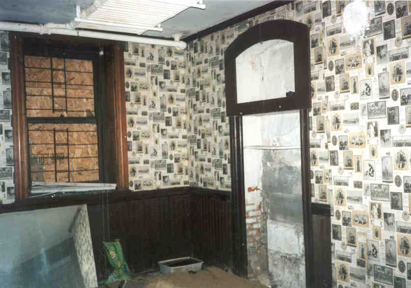
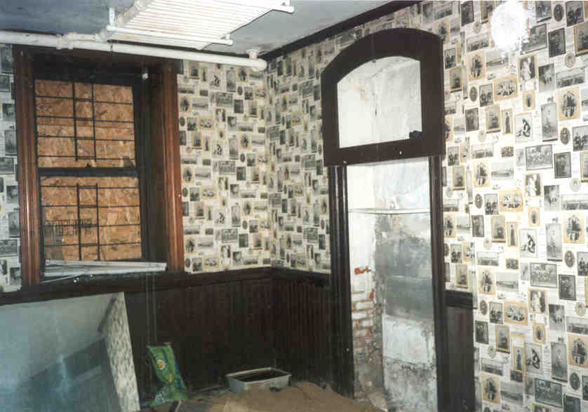

The house has been a clubhouse for a German Singing Society, home to a German Socialist organization, a doctor's office, apartments, a party house, and even a home to bootleggers.
The ghosts here are numerous. In a small room at the rear of the house a pile of baby skeletons was found, supposedly the victims of some inept doctor; today, babies can be heard crying the walls. There was a mass murder when some of the Nazis were machine gunned to death in a political dispute; their discussions can be heard throughout the house. There are rumors of an axe murder in the front tower room, the victim of which is occasionally seen standing in the window. The secret passageways around the ballroom are said to be where Tiedemann hung his illegitimate daughter Karen. Karen's ghost is the main one seen in the castle, usually in a third floor room known as "the cold room" because it stays ten degrees colder than the rest of the house at all times. Karen may have lost her life in a fight between her father and her boyfriend and then been hung from a rafter to make the death appear self-inflicted. She was just thirteen, but her ghost is often described as a woman, garbed in black, tall and thin and eerie, and often seen by people in the neighborhood.
Karen's ghost was often encountered by staff of the Universal Christian Church, which made an attempt to occupy the building after buying it in September of 1975. A UPI news story which ran a year later details the church's efforts to turn it into a soup kitchen by charging for ghost tours and overnight stays in the haunted castle, as well as Rev. Tim Swope's own brushes with the paranormal there. Famed parapsychologist Hans Holzer also relates his thoughts about the ghosts that reside there--particularly the thin lady in black, the erstwhile Karen Tiedemann. Click below to view the article for yourself.
The owners of Franklin Castle have been subject to its many hauntings. The children of a couple who lived in the house for a while asked for a cookie to give to their friend, a little girl who wouldn't stop crying. Mrs. Tiedemann is said to have possessed the wife of one of the owners for a period. No one stays long.

So, for a long time, the castle stood empty. Heimburger, the absentee landlord, put off doing repairs for more than a year; the Plain Dealer reported on the situation in a piece headlined "Franklin Castle Risks Demolition"; read it here. During that time the place was hung with construction lights and cordoned off but nearly 100% unguarded--this despite the fact that its side door often stood wide open all through the night. It was during this time--exactly the time when the newspaper article ran--that my friend Hoss and I managed our own personal self-guided tour.
I was tipped off to the once-in-a-lifetime opportunity by a very nice guy named Matt who works nearby and sent me some great pictures. (Matt went on to start Ohio Lost, one of the all-time greatest "weird" Ohio websites.) I was too excited to pass up the chance to explore a place with a history so dark and hauntings so established that famous parapsychologist Hans Holzer has investigated it. So one night in late July Hoss and I got into his truck and drove from his place in Toledo, along the lake shore, into the city of Cleveland. We found Franklin Avenue with startling ease, located the house, and parked at the curb across from it. It stands facing a T-intersection in what isn't exactly a slum, but certainly isn't the nice neighborhood this house probably stood in when it was built. It is amazing to think that Abraham Lincoln was president when the house was first inhabited.


Looking for an effective and reliable home security camera for your home, office, or department base? Want a high quality camera such as the ones used on television and in the movies to help you improve security? Want a high quality Surveillance Camera System to help monitor your home or business? Whether you are looking for Security Video Cameras or other security options, visit Surveillance Video today!
 



At first I assumed all of this was true; after all, I read it on the internet, and if that's not rock-solid information I don't know what is. However, it was deduced through conversation with an observant co-author of mine that the "Franklin Castle Club" appears to be an elaborate ruse. The club does not seem to actually exist yet (if it ever will), and the website is a fascinating exercise in wordplay and misdirection. The verb tenses constantly shift between present and future--for instance, answering the question, "How many memberships will be available in the club?" with, "The club is offering 400 memberships at this time." (Emphasis mine.) The owner does go so far as to say that memberships have been sold, and "most people have found the cost to be well worth the added value to their lives." Attempts to contact the proprietors on any topic, from general inquiries about the building to trying to secure one of these "memberships," go universally unacknowledged and unanswered.
You might recall that Michelle Heimburger, the most recent owner, was being prosecuted back in 2000 over "the slow pace of repairs." Michelle lives in Canada, according to the newspaper, and doesn't seem to concern herself much with this piece of Cleveland property. Meanwhile, a guy named Charles Milsaps was left in charge of the place, living in the carriage house out back and paying the utility bills in exchange for overseeing renovations. Whether or not he actually planned to turn the building into an upscale club (some neighbors don't like the idea), he was responsible for the pastiche of stolen pictures, half-truths, and outright lies that is the "Franklin Castle Club" hoax. (Read the article that brought everything to light here.)
No significant renovations have been done to the place, but Milsaps apparently had enough work done to default on his bills to two area contractors, resulting in liens being placed against the property. An interior designer took him to court over the $11,500 he's owed, and the Cleveland Lumber Co. claims $1,650.
Milsaps has, however, found time to use the carriage house--and possibly the Castle itself--to make amateur pornography. His confusing profile/profiles and string of contacts on MySpace leave no doubt that he's having fun up there, though not the kind of fun that other people in the neighborhood might approve of: his company, Voodoo Media Group, has produced at least two lesbian porn movies he sells online. But they're not strictly girl-on-girl, as an apparently pseudonymous "talent scout" makes clear in his profile; he claims to handle "all of our gay, bi and straight male talent." The same pseudonym left a public message on MySpace recently which said, "All the girls/guys say HI and of course we miss you around the Castle."
Meanwhile, not a single membership to the "Franklin Castle Club" has been sold. The castle looks a lot like it did when I visited it less than a year after it was torched. It doesn't even have running water.
Now (October 2006) the Plain Dealer reports that the Castle may end up on the Sheriff's Department's auction block, since Michelle Heimburger has $14,000 in unpaid property taxes and Chris Milsaps has accumulated about $13,000 in liens and judgments for unpaid construction bills.
A fake renovation...it's really pretty fascinating, don't you think? Somewhere between ballsy and unbelievably stupid. But in the end it looks like the whole thing is going to fall apart for the amateur pornographers and proprietors of the fake club.
Franklin Castle.com - Official Site
The Franklin Castle Club
Mansfield News Journal article: "Church to Occupy Haunted Castle"
Cleveland Plain Dealer article: "New Strange Doings at Franklin Castle"
Cleveland Plain Dealer article: "Boarded Up Franklin Castle Haunted by Foreclosure, Liens"
Cleveland Plain Dealer article: "Franklin Castle Risks Demoliton"
Ohio Lost: Matt's website
O'Malley, Michael. "Boarded Up Franklin Castle Haunted by Foreclosure, Liens." Cleveland Plain Dealer. October 4, 2006.
O'Malley, Michael and Joan Mazzolini. "New Strange Doings at Franklin Castle." Cleveland Plain Dealer. June 20, 2006.
Petkovic, John. "Ghosts, Haunts, and Urban Legends." Cleveland Plain Dealer. October 31, 2000 pp. 1A.
Vishnevsky, Zina. "Franklin Castle Risks Demolition." Cleveland Plain Dealer. July 31, 2000 pp. 2B.
{kind=link}